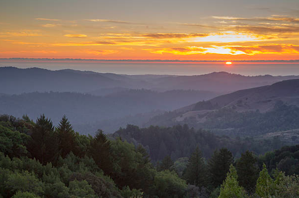
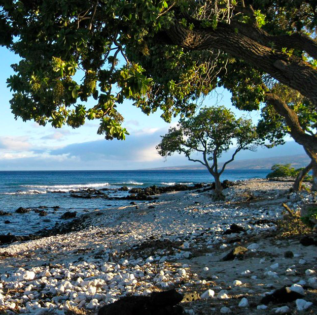
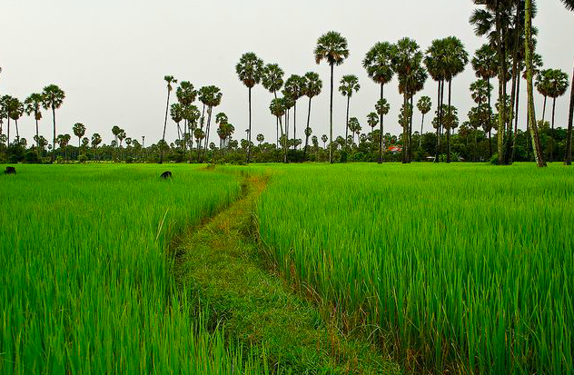
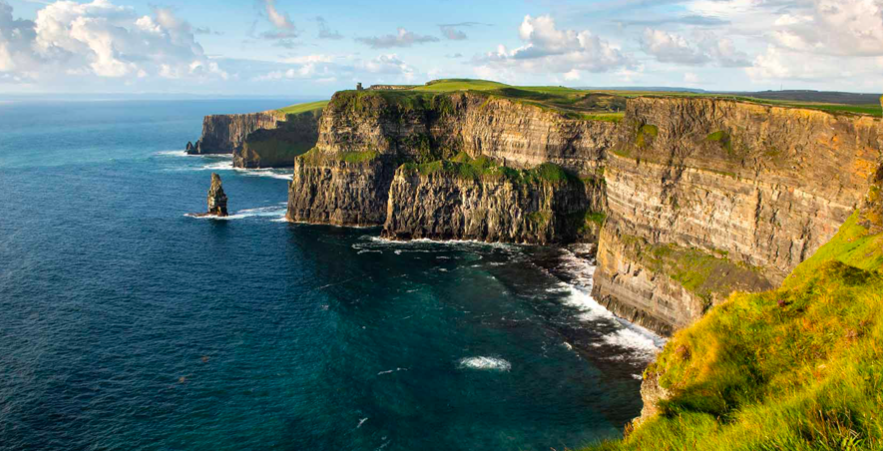
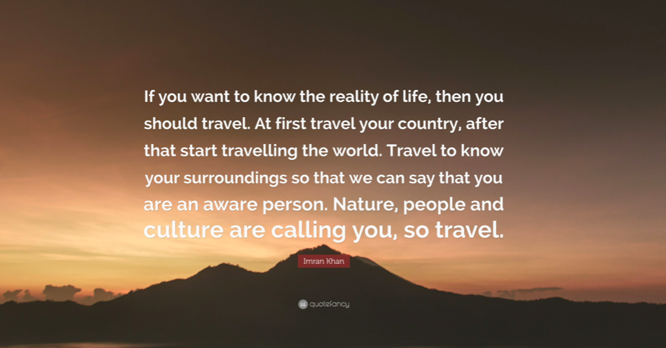

Don't Be Afraid to Explore...
Everywhere I travel I experience the vastness, power, and beauty of nature.
Although, sometimes the magic is found on the other side of the world. But,
the real power of nature is that it can be found right here, right now.
Here is a look into my journey to experience that magic...
California 🌊

"The mountains are calling and I must go" - John Muir
Finding myself on the West Coast was like being invited into a magical kingdom.
From the tallest trees in the world to the epic superblooms in the Mojave desert, California is the place to call home.
Like so many before me, I had an instant connection to the deep Pacific Ocean, calling mountains, and incredible wildlife.
With so much to explore, I am sure that I will find myself there again soon.
Hawai'i 🌈

"Big Island, Small Island" -Hawaiian Locals
The Big Island of Hawai'i is often overlooked.
It is preferred to escape to the bustling islands of Maui or O'ahu.
Packed with 1 million dollar mansions and tourists, most visitors feel at ease.
But for those with a taste for adventure, for solitude, & untouched nature - they seek out the Big Isalnd of Hawai'i.
You will see chameleons basking in the afternoon sun, 'Òhi'a trees growing through pure lava rock, and secluded waterfalls waiting to be explored.
Cambodia 🌴

"The Place You Will Leave Smiling" -An Old Peace Corps Saying
There is nothing more beautiful than a country full of smiling people.
Second to this, would be the breathtaking nature of Cambodia.
The Mekong River at dusk, the open fields of rice patties, and the red clay beneath your sandals
are enough to make you fall in love.
Ireland 🐑

"You Will Never Want to Leave" -Myself
Ireland is not a place, it is a destination.
The rolling hills of green, the raw cliffsides, and
the scent from the fields of fresh flowers fill the air.
If you find yourself walking through the rolling hills, you will
have a hard time not getting lost in sweet thoughts. Traveling through
Ireland is like a nostalgic memory, waiting to be relived.

Now the question is... Where to go next?